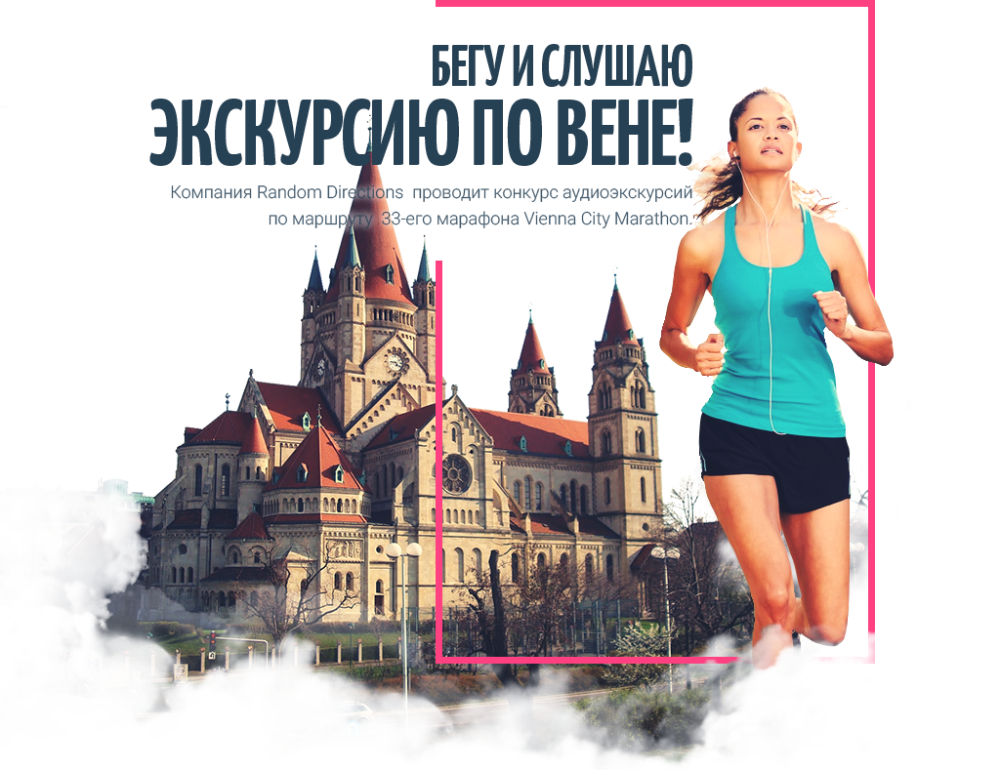
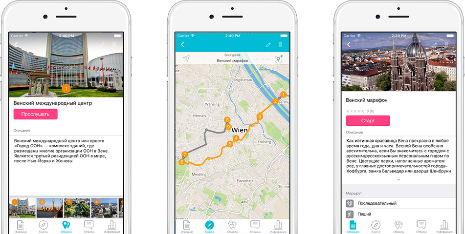

Конкурс для русскоговорящих гидов

10
Апреля, 2016
130
СТРАН МИРА
42000
БЕГУНОВ
10 апреля 2016 года в марафоне Vienna City Marathon примут участие 42 000 бегунов из 130 стран мира. Маршрут марафона проложен мимо красивейших достопримечательностей Вены: Венский международный центр, мост Райхсбрюке, парк Пратер, Рингштрассе, Государственная Венская опера, дворец Шёнбрунн, рынок Нашмаркт, музей Техники, здание Парламента, Вотивкирхе, ресторан Lusthaus, Бургтеатр.
